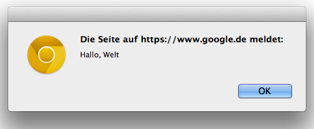

Oliver Zeigermann / http://zeigermann.eu
Web-Version unter: http://zeigermann.eu/talk/non-dev
Was muss man tun, um im Browser, ein solches Fenster zu bekommen?
alert("Hallo, Welt");console.log(10);console.log(10 + 10);console.log("Olli hat Kaffeedurst");console.log aus
console.log(10 * (10 + 29));
console.log("Olli");
var vor den Namen der Variablenlaenge hat den Wert 10
var laenge = 10;laenge = 20;alert(laenge);\ nehmt ihr bei Objekten den Punkt: .
HTML steht document für den aktuellen Bildschirm
<form>)
<input>)
HTML
<form name="ausgabe">
<input name="laenge">
</form>Setzen des Eingabefelds mit JavaScript über dessen Pfad
document.forms.ausgabe.laenge.value = 10;Auswerten-Knopf, um das Programm auszuprobieren
.\\ in Windows Pfaden
var box = {
x: 0,
y: 0,
w: 10,
h: 10,
color: 'black',
speed: 5
}
for{ ... }
for (var i = 0; i < 5; i = i + 1) {
alert("Durchlauf: " + i);
}